China is the most populous country in the world. And at the same time, its amount of emitting carbon is also much higher than other countries. As the time went by, the climate circumstances in China are not optimistic:
Since China has met a lot of situations that warn people to fucos on the environment aroung them, China should take some actions. The more emition, the more actions needed to take to protect the environment. If China can well deal with the climate change and take advanced actions, it is very inspiring that China will play an important role in leading the countries all over the world to control the climate change. Because of its huge population and vast production lines, reducing the climate change is difficult. However, the potential effect is enormous. By the survey below, a lot of Chinese people are willing to reduce the carbon emition.
In particular, we want to contribute to the reduction of carbon emissions as well as raise more awareness through our own efforts. Most of the world uses energy, and the main energy source is electricity. Today, a lot of carbon dioxide is released in the process of generating electricity. In this case, we can use natural energy sources in nature, such as solar energy and wind energy. In this way, we can keep our lives running smoothly without consuming additional carbon emissions. Solar energy is more operable than other new energy sources, so we hope to use solar energy to reduce emissions. The new campus is under construction, and we envisage using solar energy as a power source and achieving carbon neutrality in the new space -- that is, offsetting its own carbon dioxide emissions through energy conservation and emission reduction, and achieving "zero carbon emissions".
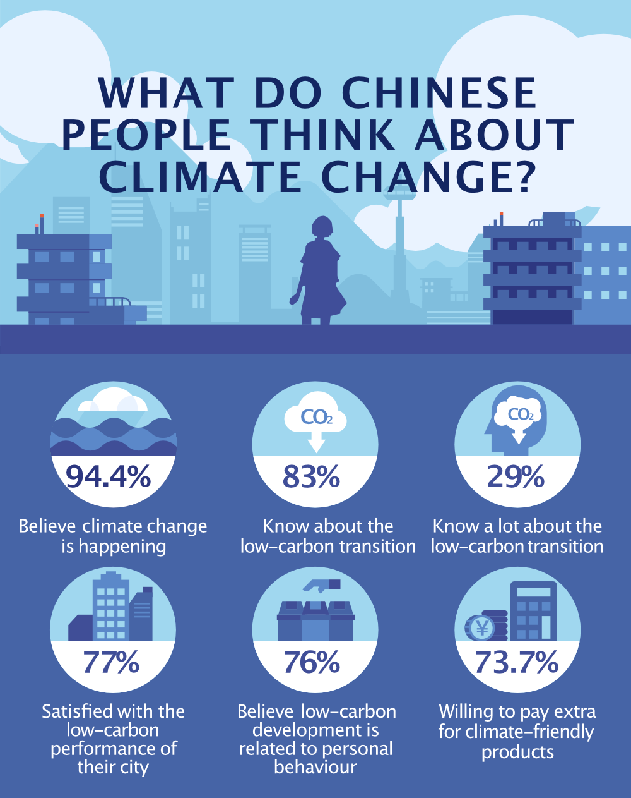Why do we need to act on/mitigate Climate Change?
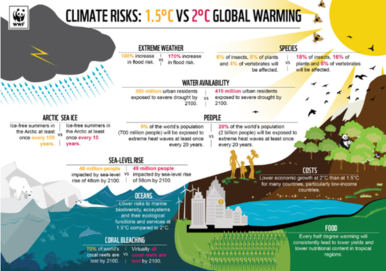Comparison between 1.5℃ temperature rise and 2℃ temperature rise:
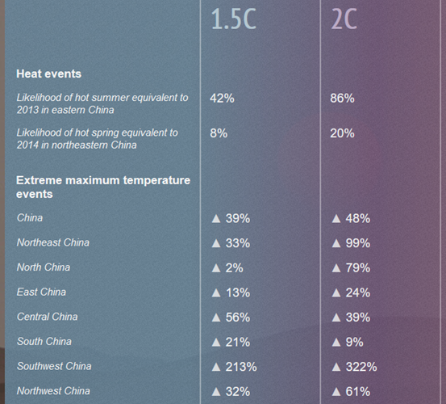 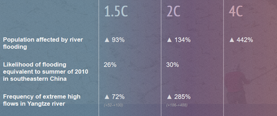Contributors: Frank (technical details), Daniel (calculation & logistics)
According to Clean Energy Authority, there are 3 types of solar power system.
On-grid solar power system is the most cost-effective one. It connects the solar power system to the National Grid, by which people can sell back the surplus energy generated by the solar power system to the grid by net metering when the generated electric energy of the solar panel is more than the house consumption. They can also draw power from the grid if the generated energy cannot meet the demand for electricity of the house.
Choosing on-grid solar could help people recover their cost on establishing their solar power system rapidly. Constructing on-grid solar can save a lot of cost due to fewer required components (for instance, batteries and/or additional electric generators). Moreover, the cost can also be earned back by selling back the excess electricity to grid. Therefore, if the fund is tight, on-grid solar will be the best choice.
Different from on-grid solar, hybrid solar bring us better flexibility on electricity consumption. A hybrid solar includes an on-grid solar and a backup battery system, which can preserve the surplus electricity while necessary. Having a battery as a supplement make it easier to cope with energy shortfalls. By accessing to the grid, when the generated electricity from the solar panels cannot meet the demand of the house, people can draw energy from the grid (if the battery is empty) or use the energy stored in the battery. Also, when there is excess production, people can sell back the electricity to the grid (if the battery is full) or charge the battery. Therefore, a hybrid solar can be much more flexible than a simple on-grid solar.
However, every advantage has its disadvantage. Having a battery backup also risen the price of the whole system. It also increases the complexity and decreases the efficiency of the solar power system.
An off-grid solar electric power system is independent from the electric power grid. Therefore, to deal with energy shortfalls, batteries are necessary. Also, to confirm that 100% of the electricity in the house should be provided by solar power system, a set of solar panels with a larger scale than on-grid solar is required. Therefore, it would cost much more money than any of the previous two. That is also the reason why on-grid solar or hybrid solar are predominating the market of the residential solar systems. However, under very particular conditions (there are no local grid coverage or the efficiency of the local grid is very low), an off-grid solar is also useful. Well, it costs a lot for us to live normally off the system.
After the technical details, I will go through the logistics and calculations needed for choosing the system. Because of the risk of having no power use and the big amount of usage, the "off-grid system" mentioned above is not taken into consider. Here we will go through the logic and calculations needed to determine whether the on-grid solar (aka grid system) is better, or the hybrid solar (aka battery system) is better.
Firstly, the differences between these systems:
| Battery System | Grid System | |
|---|---|---|
| Use energy from outer grid | Yes | Yes |
| Sell energy to outer grid | No | Yes |
| Need Battery for backup | No | No |
| Need Battery for Spare Energy | Yes | No |
Therfore, the key conditional statement that needs determination is:
Battery Cost + Money saved for not buying electricity ___ Money gained for selling electricity
If the former is bigger, battery system is more favorable; if the latter is bigger, the grid system is more favorable.
In order to determine the battery cost, we also need several portions of information. These information are listed in the table below.
| Objectives | Needed Information | Purpose |
|---|---|---|
| Battery Cost | Different types of batteries | Determine the most suitable battery type & prices |
| Solar radiation in winter & summer vacation | Calculate electricity generation when no one is using electricity to determine capacity of batteries | |
| Policies on ventilation in winter & summer vacations | Actual energy consumption during winter & summer vacation | |
| Money saved for not buying electricity | Energy consumption of our whole campus | Knowing we can generate to what percent of our energy consumption |
| Price for electricity in Beijing | Determine how many money we can save | |
| Estimation on electricity generation | ||
| Money gained for selling electricity | Price for selling electricity in Beijing | Determine amount of money gained for selling electricity |
| Policies of selling electricity produced by solar panels in Beijing |
Currently, our calculations can be found HERE:
Energy Estimation: https://shimo.im/sheets/r4ArzBePeVTYFgAV/QjPjG
Financial Benefit for both systems: https://shimo.im/sheets/r4ArzBePeVTYFgAV/SjUNT
Contributors: Daniel (sensor rig), Billy (solar panel)
Needs:
Strategy:
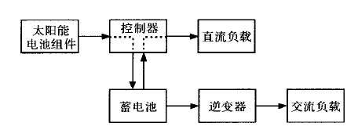Solar panels will first convert the sun's energy into direct current electricity. To store this energy, they need to convert it into chemical energy and store it in batteries. To meet the possible DC load of the new campus and protect the battery, a controller is required to control the battery's charging and discharging.
As the daily electricity demand of the campus is alternating current, the inverter is required to convert the direct current released from the battery to alternating current to meet the daily demand. The parameters such as voltage and current of each component in the whole system must be coordinated with each other. At the same time, we chose to tile the solar panels temporarily, which required custom Angle brackets or brackets for related PHOTOVOLTAIC equipment.
Company: 北京昭丰源科技有限贵任公司
Version 1:
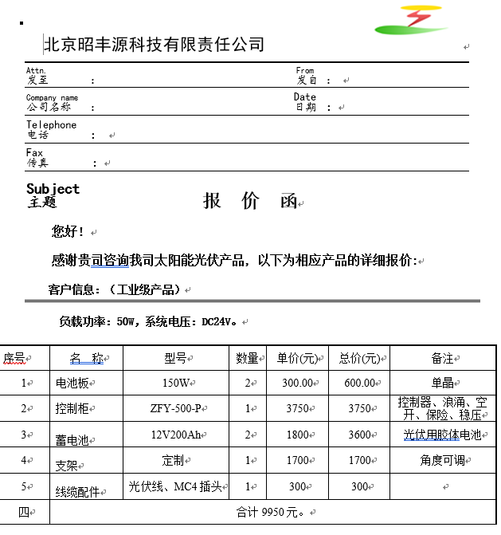This version contains some delicate instruments and they are not necessary for us to do the prototype. Thus the budget at first was very high, closed to 10000 RMB. Finally we checked the facilities above and communicated with the company to eliminate those precise equipments to control the cost.
Version 2:
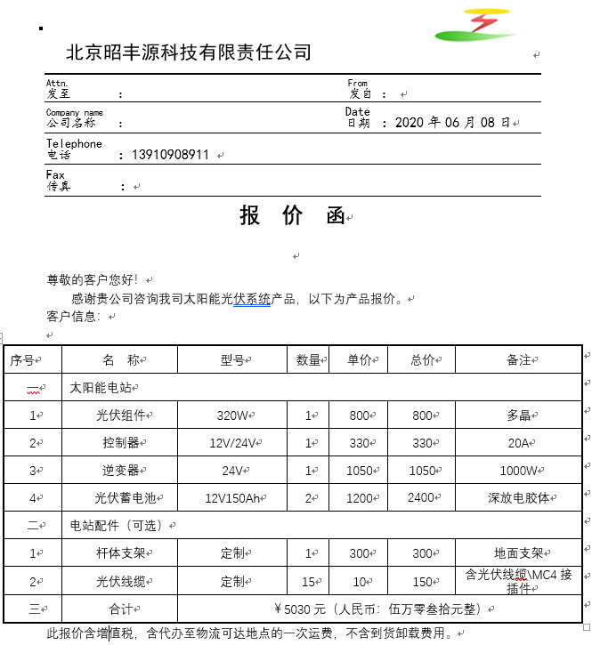This version is the final one with some basic facilites and suitable equipments to build our prototype. And the cost is also much cheaper than the first version.
Design:
After contacting many designers and architects, we learned that the prototype cannot be designed according to the standard of 500 (also 120) square meters, because the equipment applicable to 500 (also 120) square meters is not the same size as the equipment used by prototype, which is greatly different from each other. That means we can only design a small set of solar equipment as prototype.
Facilities:
Considering that if we cannot get the donation or sponsorship from others, it is more likely we will use the grid-connected power system. Our prototype tries to imitate grid-connected power generation. However, we cannot personally connect the electricity to the household power distribution cabinet, so we use off-grid equipment such as battery and charging controller for this purpose, but we choose to connect to a large load, so that the battery of the solar panel is in an empty state during the generation process, so as to imitate the power generation efficiency when connected to the grid. And small power distribution cabinet is the special power distribution cabinet that is used when imitating grid connection. The bracket can adjust the Angle at any time, usually 32°, but we will change the Angle during the test to test the light intensity and other variables.
Result:
We had a great conversation with the clerk of that company. Through almost two months' work, we got a contract from the company. Now we have been approved by Moonshot. We are ready to sign this contract and send it back to the company!
For small-scaled prototyping of solar panel systems, only using the region data collected by various climate organizations is sufficient for estimating the power generation of the system. However, for the full system design, we need specific information on the solar radiation at different parts of our roof in order to determine the needed size of battery, inverters, and various other components.
We researched on high-level sensors that can autocollect data for more than 6 days, but none is available on the internet. In order to collect realistic data, we decided to design and build such a solar sensor rig to collect the data of solar radiation.
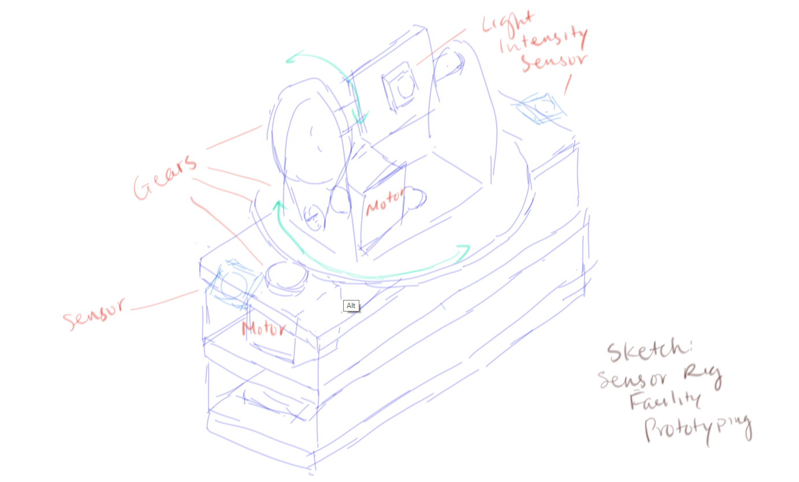Sketch of Sensor Rig Prototyping
Every sensor rig contains three light intensity sensors. Two of them are fixed-direction sensors, while another one is constantly rotating, tracking the maximum solar radiation in the minute-long time interval along with its direction. This is for the decision of fixed-direction solar panel system / tracking solar panel system. In order to maintain the precision of the record, we uses two stepper motors and timer belts to rotate the third sensor.
Powered by an Arduino Mega board along with a card battery, this sensor rig is expected to run for more than 6 days, and all data will be collected and saved into an 64MB SD card. The data in the card will be extracted and analyzed using the Python language.
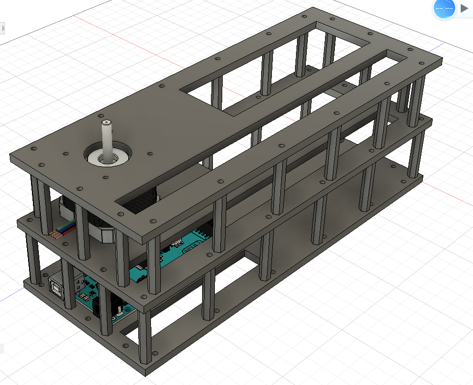Partial 3D Model of Sensor Rig
Our Bill of Materials (BOM): https://shimo.im/sheets/7Q3QyYvV4JS1FD3n/G5l4N
Each sensor rig is estimated to price about 850RMB.
Our design of the sensor rig is more than 90% finished. Parts needed design are: fastenizer for stablizing the gears, and the bottom side screw supports.
To be developed...
Contributors: Laura, Kolento
在学校的屋顶建立太阳能板可不是一个简单的工程，在资金需求上也不算少。购买一个屋顶的太阳能板总共需要60多万，而在前期确定购买材料之前，我们还需要搭建系统的模型，话费5200块钱。
这么多钱，我们从哪里弄到呢？我们又是如何及时的为整个系统提供资金的？
这次项目的筹备资金的工程，主要从两方面金发进发，一个是点对点的邀请，邀请一个公司、企业机构，或者慈善人成为我们的赞助商，给到我们单位较大的资金支持。还有一方面是众筹，通过众筹网站去向大众筹钱。
链接：https://crowd.dreamore.com/project/view?project_id=1149838801
众筹是邀请普通的大众群体给我们项目支持。其中每个人给出的数目通常比较小，大概在几十块钱左右，通过较多的人数去获得一定金额的资金。众筹的资金数与赞助商相比就非常少了，所以众筹的钱只用来做项目前期的模型搭建，为5200元。
众筹可以分为4个部分：
最后，在项目筹款成功后，还要根据回报机制去给到那些捐赠人。
第一步，建立众筹平台。通过研究，在搞清楚了自己的项目属于哪里类型之后，选择恰当的众筹平台，建立账号。
我们的项目是一项纯公益类项目，最初就选择了比较有名的「腾讯公益」。一直到所有的项目资料都准备和撰写完毕，才发现「腾讯公益」开启一个众筹项目必须有相关合作的公募机构认领。我们联系不上任何公募机构，于是只好另想策略。最后我们选择了一款手机app众筹平台：「追梦筹」。这个平台上的项目所需信息和运行模式就简单多了，拿着之前有的信息我们花了1个多小时就发布了众筹。不过同时，这个平台甚至不需要身份验证，在安全和人气上面就没法与「腾讯公益」相比较了。
第二步，撰写项目介绍。在撰写项目介绍的时候我们参考了很多已经发起的众筹项目，并且总结了那些筹款进度比较好的项目的特点。最后得到了一个项目介绍的撰写结构，大概就是从故事开头，随后进入事实问题的描述，再讨论一下我们的计划，最后按照众筹项目所需的内容填写，包括团队介绍和所需资金等等。
我们项目的故事就采用了项目成员Billy的一段对白。Billy是上海人，气候变暖在逐渐导致海平面的上升，大海很可能在未来的几十年内淹没他的故乡。 事实问题的描述我们主要分为两部分，从日常生活里气候变化带给我们影响，一直到2020年初的大灾难与气候变化的相关性，渐进的指出问题的根源和其严重性。 最后我们讲述自己要做的事情，并且说明此项目对于气候变化问题的改善效果。 在所需资金的说明里，清晰讲述众筹的资金将用在项目哪个部分，以及此部分的重要性。
第三步，确认回报机制。这部分就是要设定好，每个人捐助不同金额所能得到的回报是什么。可以根据项目的情况去设计这部分，并且承诺那些有价值和意义，且能做到的回报。
第四步，发布和传播。在项目的资料和内容都准备齐全之后，就可以发布了。发布后要怎样能让更多的人参与捐助呢？我们的答案可能就是：多传播。通过朋友圈或者群聊的转发，让更多人看到项目，并且参与捐助。
大概就是这些了，记得在众筹结束后精心准备给捐助人的回报哦！
项目提议：https://shimo.im/docs/VOAWVamE0Es8FYkZ
Contributors: Aimee, Cindy
我们通过调研的方式，了解到现在气候变化问题的严重性，从二氧化碳排放的数据来看，近几年的温度都呈一个上升趋势，有科学家说如果我们再不进行一定程度上的改变，气候变化是一个非常大的问题。我们想要尽自己的一份力，尽可能的去改善现在的气候变化问题。因此，我们用在新校区屋顶上搭建太阳能板的方式，希望可以帮助到气候变化的问题。
我们也在项目计划书里提到了关于全球变暖程度的部分，我们从很多的调研信息中，得到了这些结果。我们认为最好的解决方案就是让更多的人有这方面的意识，从最根本的地方解决这个问题。我们的项目经费也是通过我们自己一步一步募捐得来的，所以对于大众的影响力会非常大。我们也希望通过这种方式，从另一个层面上解决气候变化的问题。
Accoding to the data calculation by Billy, we can save 16437 every year. After ten years, the investment would be counteracted by the eletricity costs that we will save. Look at the photo to see more details.
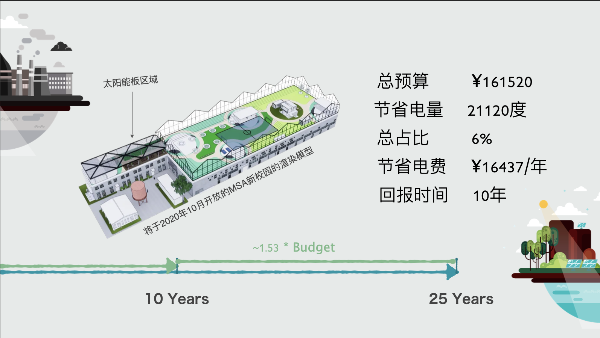Graphic and simplified version of budget sheet:
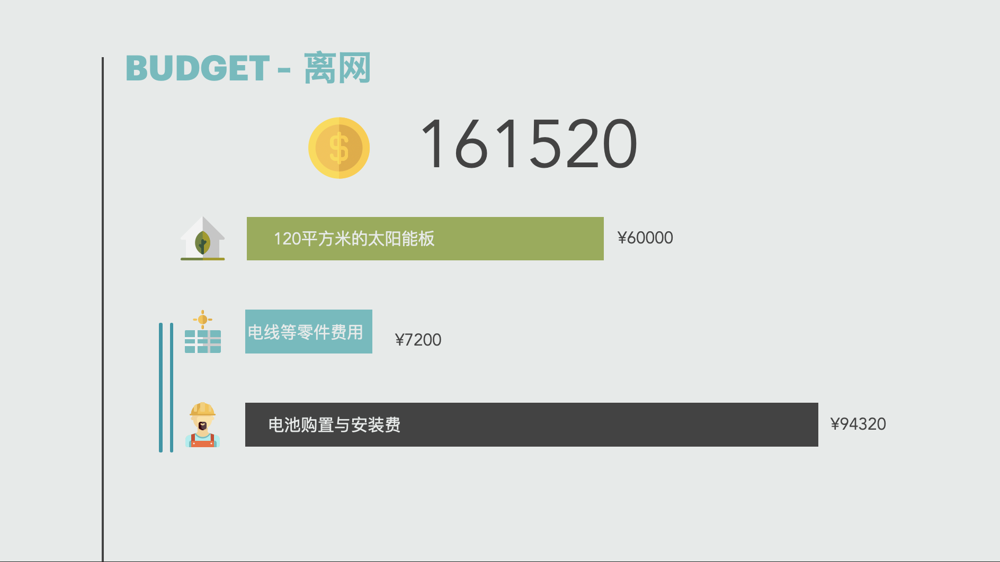Complete version of budget sheet: https://shimo.im/sheets/r4ArzBePeVTYFgAV/SjUNT
MSA investment social research
Finally, what are described above are raw informations. We did apply those information on authentic situations, especially in finance. Click into the links below to view more details.
Contributors: Aimee, Jonathan, Laurence
At the present moment, we have an area of 120 m² which can be used for solar panels. If the whole area is covered with solar panels in a battery system, we estimate that the system can produce 21120 kWh of electricity each year. However, this only covers around 6% of the schools annual electricity consumption estimated at 350000 kWh/year. By using a grid system that sell all energy produced rather than consume it directly, we estimate that it can produce 35040 kWh annually. However, the downside of the grid-system is the longer return on the investment. Selling electricity to the grid only pays 0.18 RMB/kWh while buying electricity from the grid costs around 0.78 RMB/kWh. Therefore, a grid-system on the school would need to run for 31 years before it would break even in cost, in comparison to a battery-system which would break even around 10 years.
By installing the battery-system and supplying the school with renewable energy, 6% of it's electcity usage would come from renewable sources. For the remaining 94% of the electricity use, we have a few options.
What are Renewable Energy Certificates (RECs)?
Renewable Energy Certificates (RECs), also known as green energy certificates or tradable renewable certificates are proof that energy has been generated from renewable sources such as solar or wind power. Each REC represents the environmental benefits of 1MWh of renewable energy generation. When you purchase RECs, renewable energy is generated on your behalf.
Recommended by our external supporter from Greenpeace, the Renewable Energy Certificates (RECs) can be purchased for each kWh of electricity used in our campus. These certificates will ensure that renewable energy was generated for the amount used by our campus. The positive side is that we are supporting large-scale facilities around China, while the negative side is that we pay more than the grid price for the electricity and not reaping the benefits of investing in renewable energy.
Buy investing and installing a local solar system, costs can be saved in the long-term.
While the MSA campus roof is used for social life, exercise and other equipment for the building, other buildings within the 塑三文化创意园区 do not use the roof for anything productive. This is an opportunity to make use of unused resources, but while it might save costs in the long-term, it will be more complicated compared to purchasing certificates of renewable energy.
Comparing the costs
Expanding our PV solar system would be more complicated than puchasing carbon offsetting, but cheaper over time. See the table below for a price comparison.
| Carbon Neutral Method | Cost | |
|---|---|---|
| REC offset scheme (wind energy, Hebei) | 0.128-0.168 | RMB/kWh |
| REC offset scheme (solar energy, Hebei) | 0.586 | RMB/kWh |
| Local PV solar w/ battery (5 years use after installation) | 0.75 | RMB/kWh |
| Local PV solar w/ battery (10 years use after installation) | 0.0 | RMB/kWh |
| Local PV solar w/ battery (25 years use after installation) | -0.47 | RMB/kWh |
Below you can see three scenarios using these prices:
For the following scenarios, the following assumptions are made:
| Scenario 1 | Scenario 2 | Scenario 2 | |
|---|---|---|---|
| Carbon footprint | 280 tons per year | 0 tons per year | 0 tons per year |
| Initial investment in first year | 0 RMB | 161,520 RMB | 803,000 RMB |
| Cost of electricity per year | 272,405 RMB | 311,219 RMB | 231,844 RMB |
| Cost of electricity over 10 years | 2,724,050 RMB | 3,273,711 RMB | 3,121,446 RMB |
| Cost of electricity over 25 years | 6,810,125 RMB | 7,941,999 RMB | 6,599,099 RMB |
Sources and calculations: https://shimo.im/sheets/r4ArzBePeVTYFgAV/SjUNT
To Be Developed
Contributors: Jaguar (MATRIX), Laura, Cindy
Contributors: Laura, Cindy
https://shimo.im/docs/XCCtKq6t8Q69yX3Y
To define the objectives of our project, first we have to look at the problem that we are going to solve in this project. so in our project, the problem we were focusing was climate change, and this has became our big objectives. based on climate change, we found the action we want to take in order to better solve this problem: build solar system on our campus roof. then, the objectives was been defined and we found the reasons of why we were going this project:
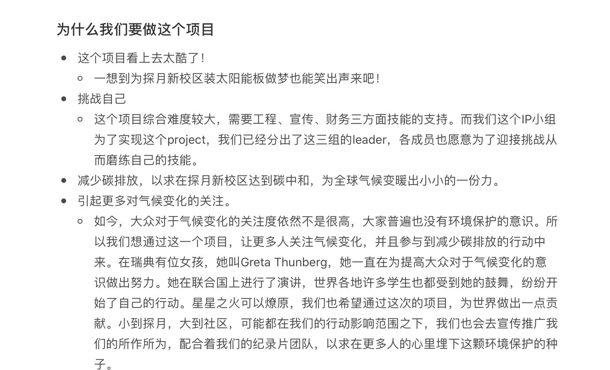We had two major Project Goal evaluation meeting
At March 27th, we still hadn't realized the extent of impact the corona-virus quarantine would have on our project. Here are the plans that people were asked to choose from:
Realistic Options for June 15th
| Option | Worst case before June 15th | Best case before June 15th | What happens after June 15th |
|---|---|---|---|
| A | A prototype finished and 10% of solar panels on the roof. We have a course plan for putting solar on the roof. | Get prototype working and install at least 250sqm (50%) on roof, have a course plan finished a finished business case we can give to schools. | |
| B | Get prototype working and install at least 250sqm (50%) on roof. We have good documentation on the project, but no course plan ready to sell. | Achieve 100% solar energy (or other ways to get carbon neutral). We have good documentation on the project, but no course plan ready to sell. | |
| C | We have some kind of solar device, either prototype or a small roof installation. We have a finished business pitch. | We have at least covered 30% of the roof. We have a finished course plan and already some interested customers. | |
| D | We don't continue this project after we finish this semester. | ||
| E | We continue the project next semester, best option as an IP course that continue. | ||
| F | We continue the project next semester but outside classes, either by applying to the MSA Incubator or via the Maker Club. |
We still deemed that meeting offline was possible. Even the least idealistic goal was to install 10% of solar panels on the roof.
The fact was sooner or later was to be known that we couldn't come back to the campus, therefore could not even build a real prototype. Based on this realization, we had another goal orientation meeting at May 12th. By this time, there is generally one month left before the blank week started.
What are list below were the final outcome:
Though we replaced the actual installment (installing on campuc roof) of the system by other products such as handbook, we still included the installment of prototype in the plan, which, later, we were failed again. I suppose the reason that we made an unrealistic plan twice was that we kept hoping for the best. So, if we do it all over again, I will adviced the people who are in charge of the orientation meeting agenda to hope for and plan BOTH the best and the worst.
one of the big decisions that we have changed in our project was when the time we changed our project outcome. because of the virus situation, we can not go back to our school campus and to actually build the solar systems on the roof, so our biggest project outcome can not be achieved. then, we have to change our project outcome and to comes with a new plan on what are we going to produce at the end of the semester.
to making sure that the whole team has an opportunity to speak and give input before changing this big decision, our team has organized a meeting to let everyone shared:
Here are some of the answers:
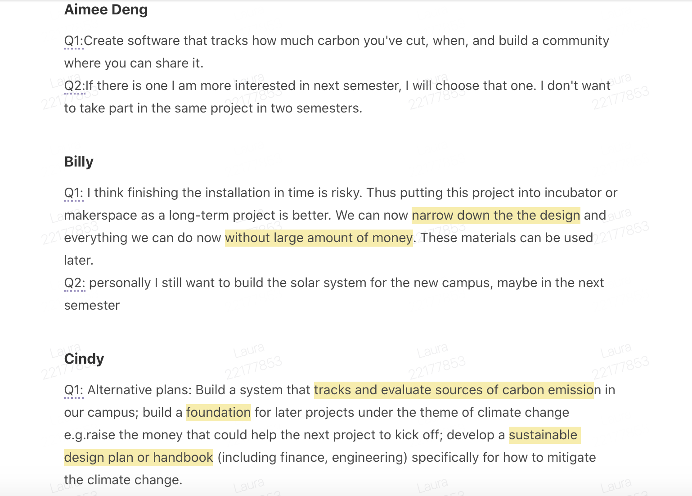lastly, we sumed up all these ideas in to four parts, and these became our prject new outcome that has included everyone's participation and contribution:
in addition, after we made our new desicion about the project outcome, our team coaches have also talk to everyone 1-on-1, to asked them how were they doing and also they feelings toward this new desicion.
Contributors: Cindy
Leader's group meet once a week on Monday between 5:30-6:30. During this particular meeting, leaders and coaches balance information with each other to have a big picture of our project. Through those understanding, we instantly make adjustments. For example, when we are seeing that tasks are close to be finihsed, lead group members would propose ideas about how we are going to divide our tasks next.
If one meeting involves too much topics to be discussed, we will divide and set deadlines for the tasks between us. For leaders, the deadlines are always quite urgent, because we need to swiftly catch up current situation. Jaguar and Jonathan, two of our team coaches, once constructed a more organised Gannt Chart structure using the similar logic of WBS (Work Breakdown Structure). The rest of lead's group including Daniel, Billy of Engineering group, and Laurence, Cindy of the finance group provided feedbacks on the updated Gannt Chart. We then held another meeting to furthur clarify distribution of responsibilities. For instance, we mark up the person(s) who would be in charge of a certain task. Note that the names in bold are the owner of the task. To clarify an only owner is important because this is making people more certain about their works, so that they will not be upset by different expectations, also be more responsible for their own tasks.
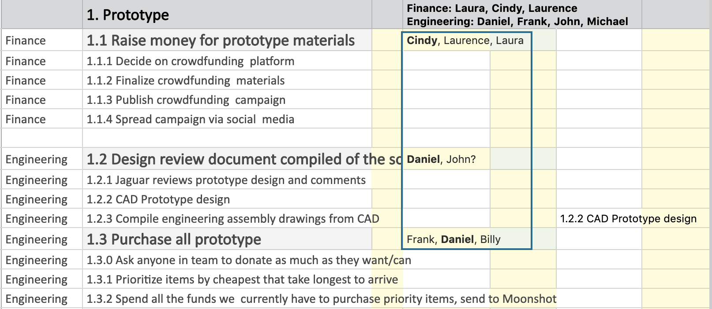Then, engineering finance team leaders and coaches respectively draw timelines for the tasks. We usually start by setting milestones within a task (denoting the darker colours), then it would easier to complete the rest of the timeline.
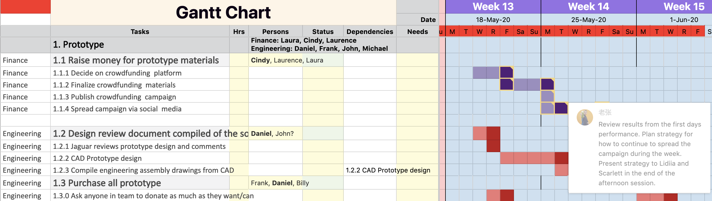What is introduced above is how we oversee the tasks. What's more, the owners of tasks check usually check progress of their tasks in check-ins - a 30 minutes' meeting between 8:00-8:30 every morning. At every Monday, our routine schedule is to check the tasks on Gannt Chart and divide the task with more details. We use Microsoft Planner to do this. Important tasks are checked with special attention. For example, some of the engineering members held a meeting to evaluate the completion of sensor rig. The team coaches and leaders, who are willing to support other members, not only give reminders when the tasks are going to be overdue, but also provide people support in any forms.
*The approach that I mentioned above is called Gannt Chart is a visualised team management tool (Click "Gannt Chart" to view our Gannt Chart).
Minor reflections happen every Monday in leaders' routine meeting, where we have informal reflections for the passing week(s). Based on these reflections, we construct actions plan for following days.
However, a formal reflection meeting is critically required sometimes. At the beginning of the project, in addition to the form of online collaboration, all of us are not farmiliar with each other, which made our collaboration and progress even more inproductive. So, one of the leaders proposed the idea of a formal reflection meeting to reflect on the teamwork.
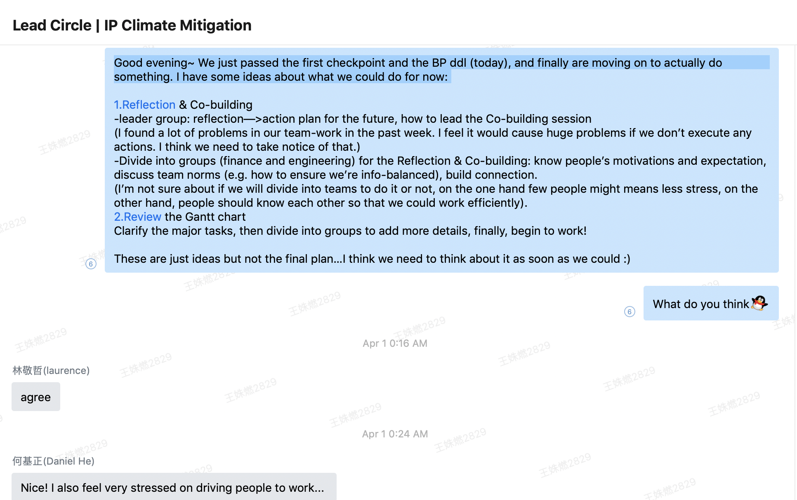Leaders and coaches realized a bigger picture of the issue (teamwork) and settled matters such as the co-build activity for the whole team. Click into the link: Leader's Reflection Meeting at 2020/4/6 to see more details. Other team reflections: 0410
Key Contributors: Jaguar, Cindy
During the project reflection session, together we made a general project timeline. All of our documents, evidence, including this timeline, are this shared shimo folder. When the project just started, we used Microsoft OneDrive. Although Jaguar and Jonathan instructed us in such details about how to download related applications, I personally didn't get used to use OneDrive before we transform the documentating platform into shimo. Shimo is easier to operate, and in which people could see who are editing at the same time (so that we could remind people to focus on the task). I suppose we should brainstorm some "must-dos" before the project officialy starts, where we could have thought about the improtance of documentation. Then, leaders could arrange a short platform research session.
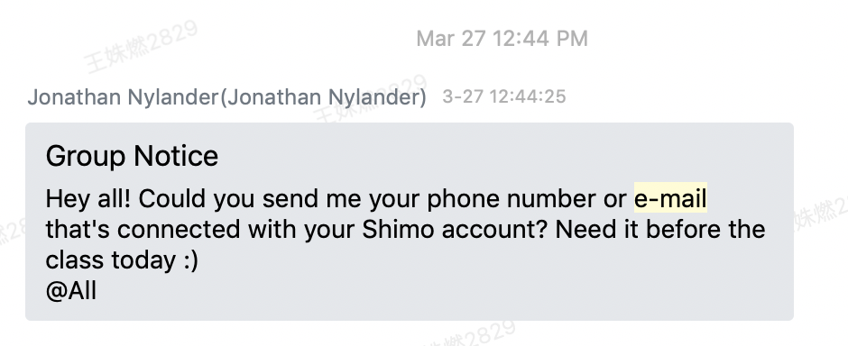Jaguar and Jonathan is in charge of designing the weighing of different sections, which could be tracked in Master Plan. On the other side, we link our evidence in MATRIX. When we link photos and sections in individual folders, the block of the corresponding skill could be truned green. The project coaches verify the skills by turning the green boxes into blue, meaning we have reached the advanced level. The evaluation is not only being counted in GPA, but also a great approach to review a semester-long work, receive feedbacks and future improvements.
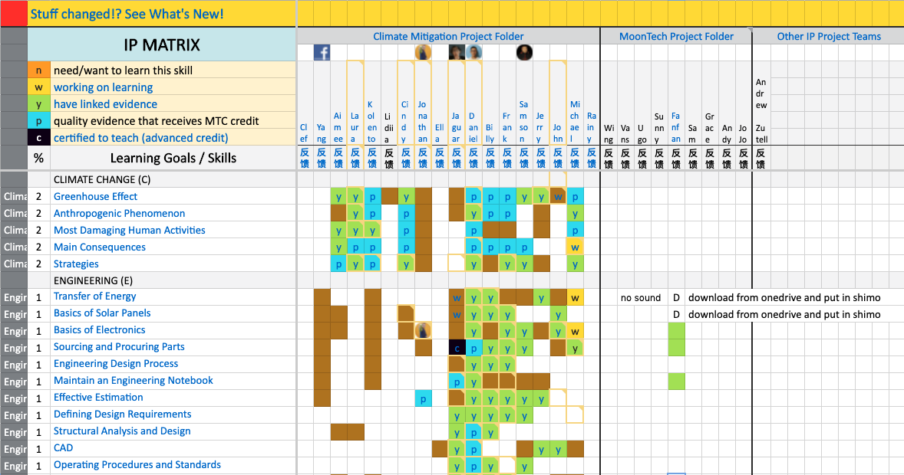GPA was calculated from 4 main areas: weekly blogs (10%), soft skills (30%), knowledge skills (30%), and project completion (30%). You can see more about how they were broken down in the picture below:
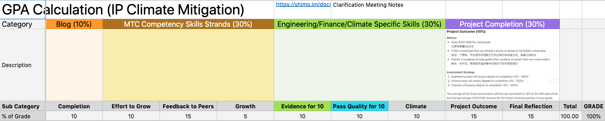The MATRIX was mainly used as a means to document the hard skills and knowledge we were learning throughout the project, while blogs and feedback to our peers were used to help us reflect on our progress and improve our soft skills. We tracked blogs in the MASTER PLAN in a specific Blog Records tab:
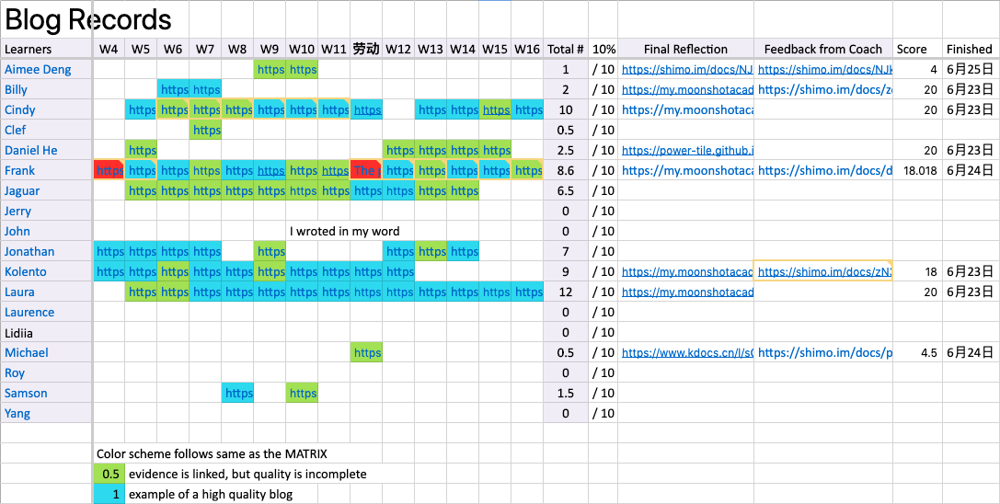As for Feedback, periodically we would fill in a chart to give feedback to every member on our sub-group teams. We even gave each other detailed feedback on our specific selected skill strands we each wanted to improve throughout the project according to our school's competency rubrics. Then we would self report how many feedbacks we wrote to our peers and the 15% portion of our grade dependent on feedback was calculated:
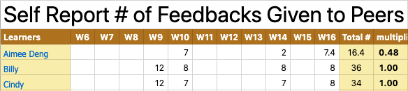 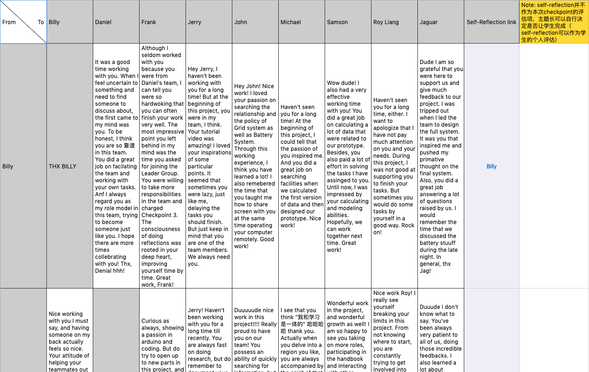Contributors: Cindy, Jaguar
The kick-off meeting of Climate Mitigation should be the first lead group meeting. The leaders are who either volunteered as leaders, or encouraged by the coaches to be leaders. Leaders have been adjusting our roles. We were initially responsible for planning check-ins and IP sessions, later, we found that the working pattern was unproductive, and that when the project progressed, people need more working time. Gradually, it had became a routine where Jaguar and Jonathan facilitated the check-ins, and us (learner leaders) lead the working time in seperated groups.
The team leaders in this project each take on one area of responsibility (i.e. Engineering System Design, Fundraising or Public Relations/Communication). While they have the final say and responsibility in their area, they all share the work of managing the whole team, the resources we have available and making the best use of our limited time. This include making decision on our strategy, what work is important at what time and the division of work across the team.
We expect the team leaders to be self-directed, take initiative when observing problems or misunderstandings, and seek out help from project coaches or team members when needed. As project coaches, we expect team leaders to tell us when we’re stepping over our boundary, and when we’re not being supportive enough.
The team leaders are responsible for the project outcome in terms of their chosen role (area of responsibility). They are also responsible for facilitating the majority of working time, and together with coaches, invite more experienced people to teach the team the skills we need at the right moment. Team leaders are responsible for the team members under their area of responsibility, to make sure that everyone is clear on the work that needs to be done, and make sure that there’s a balanced division of work. Team leaders are also responsible to inform project coaches when the team is having problems that are difficult to solve.
In the coaches' mind, the project could be divided into three sections: Engineering, Finance and Public Relations&Documentation. While Billy and Daniel were the leaders of Engineering team, Laurence and Yang are the leaders of Finance. When we guadually gained more knowledge about what our works looked like, we merged the Public Relations&Documentation section into Finance. Firstly, we only have seven persons in finance group. Also, applying donors' investment or raise crowdfunding could not be donw without PR&Documentation.
Key Contributors: Jaguar, Cindy
In the Climate Action theme, a project coach is essentially what a basketball coach is for the basketball team, but for our project team. The project coach will assign leaders (like team captains) who already have sufficient experience and track record, while providing strategies for working together as a team. He/she will leave room for each team member to let their strengths shine on the field while giving support and advice for improving their current struggles.
The project coaches will have more professional experience than the team members and will thus help the team avoid common mistakes and stay on track to achieve our goal. At the same time, the project coach will not get on the field in a game to score a goal for the team and then sit back down, but rather work with the team members to improve their practice (and get tough when they are wasting their potential at the cost of the team).
The responsibility of project coaches are to guarantee that all learners in the project have the chance to and can reach the learning goals. At the same time, they are also partly responsible for the whole project outcome.
The project coaches are also responsible for everyone’s equal opportunity to grow themselves and learn about the content relevant to the project. This may include developing personalized learning paths for team members, finding helpful resources, as well as helping team members to compromise and solve conflicts that are going out of hand.
Jonathan, Jaguar and Lidiia were Climate Mitigation's project coaches. While Jonathan worked along Finance group and Jaguar worked in Engineering group, Lidiia was our fund-raising expert, our special guest.
To extend what are described above (it became a routine...sperated groups), coaches seem didn't provide us too much "visible support", but rather many "invisible support" like encouragements and conversations. In the middle of the project, when we encountered many tensions in teamwork, coaches were defining their roles as well. Jonathan felt that he had taken part in our work too much, considering how to reach a balance between autonomy and control.
Through the conversations with Jonathan I realized that coaches were similar with us--trying to find weakness and seeking to break through the obstacles or comforst zones. These are what learners comment on coaches concern and the coaches themselves:
"老张在学期末的时候和项目开始的时候很不一样了，我觉得老张更愿意去带领我们，在团队组织里参与了更多。老张有的时候会担心自己做的太多了，不过我个人觉得没什么问题，因为当老张和抱抱去更多的带领团队的时候，我其实有更多的安全感，也感觉团队是更稳定的。"
"Lidiia是一个我们找反馈一定会去的地方，每次给的feedback都很有建设性，我觉得是一个很会从其他角度去看待我们项目的人，这个人我觉得也是非常重要的，有了这个人之后我， 才能用不同人的角度看待一个问题，有了不一样的效果和解释。"
“Dude I am so grateful that you were here to support us and give much feedback to our project. I was tripped out when I led the team to design the full system. It was you that inspired me and pushed my primative thought on the final system. Also, you did a great job answering a lot of questions raised by us. I would remember the time that we discussed the battery stuuff during the late night. In general, thx Jag!“
Key Contributors: Cindy
Climate Mitigation project group has the most people than other IP projects--we have fifteen learners and three project coaches. Though it seems that the disadvantages are brought by the self-identification of big project group, the truth st more complicated than that. Here, I am only trying to do a brief analysis, which might not include the full picture. In two different perspectives, we are both a big and a small project group, which respectively bring forth advantages and disadvantages.
The motivation of joining the project varies between individuals. The larger the people, the harder it is to form private environment to have deeper communication. Without connection and trust being built, it was harder to have effective team management, such as making sure to follow the deadline. This situation is heightened by the irreversible online-working environment, the unfamiliarity between new learners (2019) and founding learners (2018). Particularly, when there are learners who had not discovered deep motivation for this project, on the one hand we need to proceed the challenging project speedily, on the other hand building connections with those learners and helping them to find motivation are necessary for proceeding the project, which cost great energy and time.
There were some moments when almost all of our people are feeling engaged. It was especially happy and silly when we were having the first kind of party, for example, when telling embarrassing project experiences and having the final project celebration.
As a group of inexperienced learners, especially in finance, who were doing a really challenging project with limited time, we need more people to do works, so that we could proceed more tasks at the same time.
Often we find that being focused, which is an essential element to ensure productiveness of working and meetings, is a challenge of collaborating online. Since we couldn't see each other, we don't have peers to remind us of being focused. Therefore, during leaders' reflection meeting, we came up with norms, which are listed above.
However, we didn't stick to the first norm for a long time. While most people refused to turn on camera, others later quitted turning on camerca as well. This is a thing that we all need to reflect on. Here are the reflection blogs.
Sense of achievement encourgaes people to strive for more achivements. When this happens, it means that people who originally do not farmiliar with one another start to serve one goal and work beside each other. During this process, we encounter predicaments, deadlock and conflicts. Yet, the moment when the conflicts are resolved would be one of the most impressive team moment being remebered.
Next, having relaxing co-build activities is another method. Activities such as doing sixteen personalities test, making memes, celebrating mistakes, are where we share happiness together.
In a nutshell, having "team moment", some memories that we share together, is the key to this question. This approach is effective when it is either embedded with authentic situation (having achievements), or happen in a relaxed atmosphere (e.g. don't arrange co-build activity when most people urgently need working time).
There are three principles (not the order of significance):
A) Compassion. Believe eveyone is not simply what we are seeing them to be when the conflict happens. For example, if one seems to have done some "bad thing", the person is not "bad". But that he did that out of some reasons. As long as we realize what that is, we could then evolve the team based one these feedbacks.
B) Open Communication. Some members of our team are concerned because some members do not communicate openly. This made teamwork at first largely ineffective. Nevertheless, we also benefit from open communication -- there are always some members who care about open communication, so we are gradually approaching to the ideal situation in our mind.
C) The bettering of our project (progress) and peole (connection). We do not afraid of admitting each's own defects. This could be seen in our tradition of celebrating our mistakes.
There are the three traditions of us: giving feedback, writing blogs and building sweet&吐槽box.
Since everyone could only see small parts of the full picture, giving feedbacks to each other provide opportunities to see bigger picture of both oneselves and the team.
We write blogs on personal websites, which are gather in one shimo chart shared to everyone in the project. Jaguar, our team coach, provides us feedbacks on the blogs. Blogs function as a carrier of our memories for us to refer to in the future. In addition, we sometimes are too shy to share things "face to face". But in blogs, we could freely take down our ideas and/or reflection of the past week. This kind of communication becomes more spontaneous and natural -- someone who might accidentally clicks into one link, feeling the writers' thinking is interesting. Accordingly, this is one way to build connection and see bigger picture as well.
Sweet/吐槽 box functions similarly with blogs. The difference are:
Feeling one's being supported is one of the most empowering experience in this project. This kind of experience need two sides: the person who asks for help, and the person who provides it. First, a person who is not afraid of admitting his or her own weakness, and is out of the bettering of our team and project is a prerequisite for this experience. Also, one who is out of compassion and the same motivation as the former does is readily to provide help.
Thanks to the obstacles that we have encountered which stimulate us to seek for better situations and solutions, an ideal collaboration situation is accordingly formed.
This stands on the perspective of team management. Different parts of the team only possess part of view of the project. In order to see bigger picture, to check the progress, and to instantly orientate the project, sharing information to other parts of the team or indivuduals is crucial.
Personal connection with other members in the project is a way to empower an individual. The moments when the "sense of team" appeared are always parts of the most impressive and productive periods.
Notably, The obstacles are listed above (before this part) in the form of questions. Yet at this moment, I believe it is necessary to provide a definition to the model of ideal, or effective collaboration, a brief summation of our semester-long teamwork and an expectation for the future.
Contributor: Laura
Team Reflection Document: https://shimo.im/docs/NJkbEZgERwfM6ZqR
Sweet Box & 吐槽 Box: https://shimo.im/sheets/aokGMmgRpaUwFa3E/MODOC
在项目结束前的最后一节课里，我们分成engineering和finance组，分别对整个项目做了reflection。其中每个人都会回答一些问题，聊一聊自己在这个项目组里的成功、挑战，还有收获等等。
以下摘取自团队成员的反思：
在项目进行过程中，整个项目组也一起做过小反馈，比如说sweetbox&吐槽。每个人有机会在一个网页输入自己想要感谢的话或者想要吐槽的点，然后所有人就会在项目导师共享的大屏幕里看到这些内容。从中可以看到大家受到的鼓励和进步，也可以看到一些遇到困难的地方：
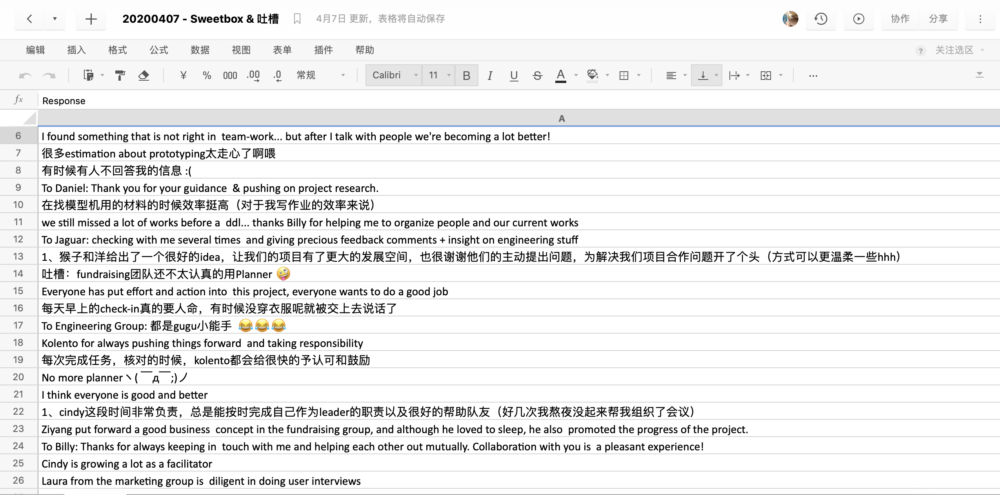以下摘取自团队成员的反思：
以下摘取自团队成员的反思：
如果再碰到相同的问题，我会去做更多的沟通。我会主动向项目教练和成员抛出问题和我自己的看法，并且不断寻求反馈。 如果再次碰到无意义感，我会去向团队教练或者整个团队发出这样的问题。同时，我也会去思考更多，问一问自己我们可以做什么，让这个项目有意义感？或者，什么可以是我们项目的意义所在？
意义感就是对于兴趣最好的帮手。感兴趣的东西我可能会在兴趣热度消失之后完全将它抛弃，但是意义感是一种“责任感”和“成就感”，是会一直让自己充满动力去做的事情。所以，在项目中找到它对于你的意义感，确定了自己到底为什么要做它，对我来说就是最好的方式了。
这个项目中的合作，与其他项目最不同的地方可能是时间。作为IP课程中的项目，我们有很多的机会去和彼此讨论、工作，还有团建。每天早上都有一个checkin时间、下午经常有课程，所以可以说我们是一个“朝夕相见”的项目小组了。而我认为，正是在这个相处时间充足的情况下，我们有了最特别的合作体验。在长时间的合作里，很多人与人之间的小问题逐渐暴露，在合作中我们渐渐展现出最真实的自己。因此我们也产生了很多问题和矛盾，但是一学期的合作时间足以让我们去理解这些问题，最后再默契的去工作。